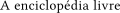
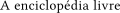
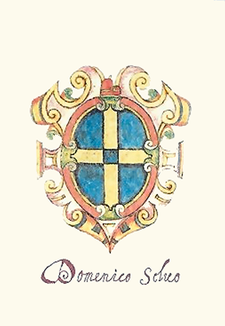

Domenico Selvo foi o 31.º Doge de Veneza, cargo no qual ocupou entre 1071 a 1084. Durante seu reinado como Doge, suas políticas locais, as alianças que ele criou e as batalhas em que os militares venezianos se tornaram vencedores e perdedores, foram as bases para a grande parte das futuras políticas interna e externa da República de Veneza. Ele evitou confrontos com o Império Bizantino, o Sacro Império Romano-Germânico e a Igreja Católica Romana, em um momento da história europeia em que os conflitos ameaçavam perturbar o equilíbrio dos poderes. Além disso, ele também determinou novos acordos com as principais nações que estabeleceriam um longo período de prosperidade para a República de Veneza.
Através de sua aliança militar com o Império Bizantino, o imperador Aleixo I Comneno concedeu favores econômicos a Veneza com a declaração de um tratado bizantino-veneziano que permitiria o desenvolvimento do comércio internacional da república nos próximos séculos. (leia mais...)

 329 línguas
329 línguas